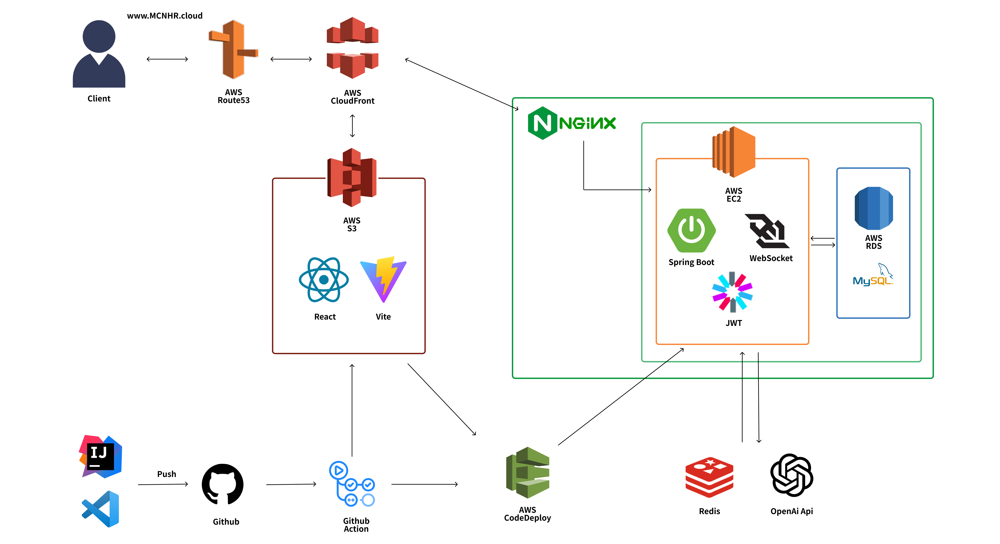
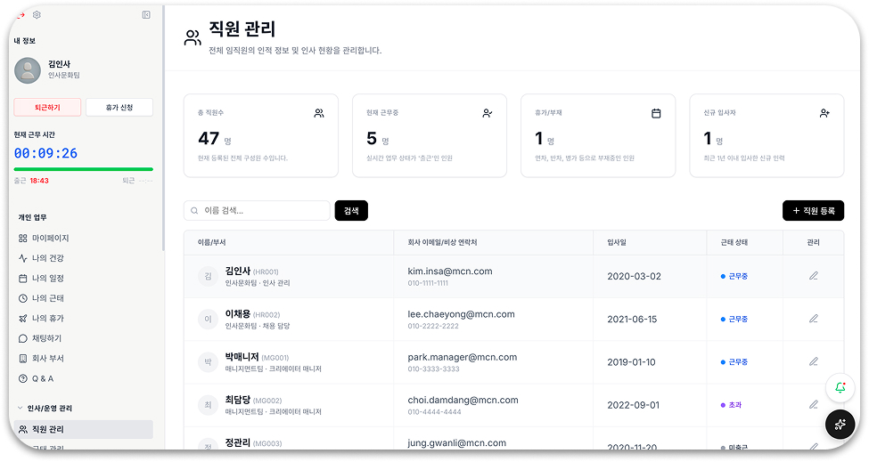

MCN HR SaaS · 팀장 (6인)
Creator-Flex
크리에이터 소속사 MCN의 직원과 크리에이터를 통합 관리하는 HR SaaS 플랫폼
프로젝트 개요
기간
2025.12.22 ~ 2026.02.27
소속 / 담당 분야
[팀장] 팀 프로젝트 (6인) | 백엔드 개발 / 프론트엔드 개발
KH정보교육원 AWS 기반 DevOps 풀스택 과정
KH정보교육원 AWS 기반 DevOps 풀스택 과정
팀장 역할
- 팀장으로서 일정 관리, 역할 분배, 주간 회의 진행
- Git 브랜치 전략 수립 및 코드 리뷰 주도
Java
Spring Boot
React + Vite
WebSocket
STOMP
AWS (RDS, S3, EC2)
MySQL

담당 기능 및 구현 범위
직원(임직원/크리에이터) 관리 CRUD
- 직원 등록·조회·수정·해고 처리 RESTful API 설계 및 구현
- 관리자 전용 전체 직원 조회, 매니저/크리에이터 직급별 필터링 기능 구현
- AWS S3 연동 프로필 이미지 업로드 및 관리 기능 구현
일정 관리 CRUD
- 전사 공통 일정과 개인 일정을 분리 관리하는 이중 스케줄 구조 설계
- 매니저가 담당 크리에이터의 일정을 대신 등록, 수정, 삭제할 수 있는 위임 일정 관리 로직 구현
- 일정 유형(미팅, 콘텐츠, 프로모션, 개인 등) 분류 기반 필터링 API 구현
WebSocket + STOMP 실시간 채팅
- STOMP 프로토콜 기반 단체 채팅방 및 1:1 채팅 기능 구현
- 채팅방 입장·퇴장 이벤트 처리 및 브로드캐스트 구독 관리 구현
- 메시지 수신 시 읽음 처리 로직 구현 (읽지 않은 메시지 카운트 관리)
- 브로드캐스트 시 자신이 보낸 메시지가 중복 렌더링되는 문제를 clientUuid 식별자 도입으로 필터링하여 불필요한 클라이언트 렌더링 부하 방지
- 채팅 메시지 조회 시 전체 데이터를 한 번에 불러오는 방식에서 마지막 메시지 ID 기준 페이징으로 개선하여 응답 시간 평균 70ms → 14ms, 약 80% 단축
전역 예외 처리 시스템 구축
- @RestControllerAdvice 기반 글로벌 예외 핸들러 구현으로 API 전반의 일관된 에러 응답 포맷 통일
- CustomException + ErrorCode Enum 설계로 도메인별 비즈니스 예외를 명시적으로 정의하여 예외 원인 추적 및 유지보수성 향상
트러블슈팅
직원관리 및 전역 예외처리

문제점
- 직원 목록 상단 통계(총 직원 수·출근 인원·휴가 인원·신규 입사자 수)를 Attendance, Vacation, MemberEmployeeDetail 테이블에서 각각 별도 집계 쿼리로 처리하여 단일 API 호출에 다수의 DB 요청 발생
- 직원 등록 시 Member → MemberEmployeeDetail → MemberProfile 세 테이블에 순차 저장하는 구조에서 중간 실패 시 일부 데이터만 저장되는 문제 발생
해결
- 직원 통계 조회 시 필요한 데이터를 Fetch Join으로 연관 테이블을 한 번에 조회한 뒤, 하나의 응답 객체로 조합하여 클라이언트가 단일 API 호출로 목록과 통계를 모두 받을 수 있도록 응답 구조를 설계
- 직원 등록 전체 로직을 @Transactional로 묶어 중간 실패 시 전체 롤백 처리
결과
- 단일 API 호출로 직원 목록과 4가지 통계를 한 번에 응답하는 구조로 개선
- 연관 테이블 저장 중 일부만 저장되는 문제 차단
도메인별 비즈니스 예외를 명시적으로 표현하기 위해 ErrorCode Enum에 HTTP 상태 코드와 에러 메시지를 함께 정의하고
CustomException이 이를 참조하는 구조로 설계
@RestControllerAdvice 기반 전역 예외 핸들러를 구현하여 CustomException 및 일반 예외를 일괄 처리하고 API 전반의
에러 응답 포맷
통일
WebSocket + STOMP 실시간 채팅 — 읽음 처리 DB 설계 개선

문제점
- 초기 설계안 : ChatMessage 테이블에 read 컬럼을 두어 메시지마다 읽음 여부를 개별 관리
- 단체 채팅방 특성상 메시지 수신 시 N개의 메시지 레코드 각각에 UPDATE 쿼리가 발생하여 메시지 양에 비례한 쿼리 증가 우려
해결
- ChatRoomMember 테이블에 lastReadMessageId(마지막 메시지ID) 컬럼을 추가하는 방식으로 설계 전환
- 메시지 전체를 수정하는 대신 사용자별 마지막 읽은 메시지 ID 1건만 UPDATE
- SimpUserRegistry로 현재 채팅방 구독 중인 접속자를 실시간 조회하여, 접속자는 메시지 저장 시 즉시 읽음 처리 / 비접속자는 채팅방 진입 시 일괄 처리
결과
- 메시지 수에 관계없이 읽음 처리 UPDATE 쿼리를 멤버 수 기준 1건으로 고정
- 읽음 처리 쿼리 수 : 기존 메시지 N건 UPDATE → 멤버 1건 UPDATE로 개선
중복 렌더링 문제 해결 (clientUuid)
STOMP 브로드캐스트 특성상 발신자에게도 메시지가 수신되어 중복 렌더링이 발생하는 문제를 clientUuid 식별자 도입으로 필터링하여 해결
채팅 메시지 조회 DB 설계 개선
문제점
- 채팅방 입장 시 전체 메시지를 한 번에 조회하여 메시지 2,000건 기준 평균 70ms, 최대 198ms의 응답 지연 발생
해결
- 오프셋(Offset) 방식 대신 마지막 메시지 ID를 기준으로 조회하는 커서 기반 페이징 적용
- 채팅방 입장 시 최신 메시지 20건만 우선 조회, 사용자가 위로 스크롤할 때만 이전 메시지 20건을 추가로 불러오는 방식으로 개선
결과
- 평균 응답 시간 70ms → 14ms 로 약 80% 감소
- 최대 응답 시간 198ms → 10ms 로 약 95% 감소